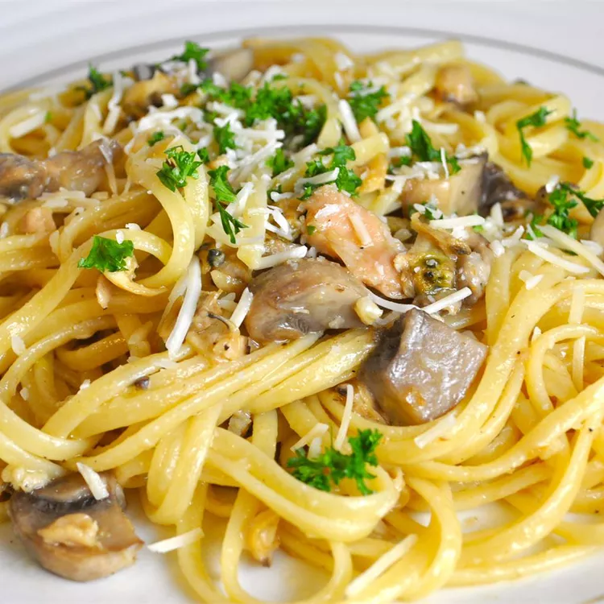

Clam Sauce with Linguine
<-- back

This is a super fast and easy recipe. One of my favorites. Even my kids love it.
Though sometimes I use 1 1/2 pounds of noodles. Fettuccine can also be used.
Tastes even better with fresh baked rolls or French bread and a garden salad.
For the special occasion have a nice glass of red wine with it.
Ingredients
- 1 (16 ounce) package linguine pasta
- ½ cup butter
- 3 cloves chopped garlic
- 1 pound fresh mushrooms, sliced
- 2 (6.5 ounce) cans chopped clams with juice
- ½ cup chopped fresh parsley
- 1 teaspoon salt
- ½ teaspoon ground white pepper
- ¼ cup grated Parmesan cheese
Step by step!
- Bring a large pot of lightly salted water to a boil.
Add pasta and cook for 8 to 10 minutes or until al dente; drain.
- Melt butter in large skillet over medium heat. Saute garlic and mushrooms until golden brown.
Stir in clams with juice, parsley, salt and white pepper. Cook over medium heat until hot.
Toss with pasta until evenly coated. Serve garnished with Parmesan cheese.
- Enjoy!